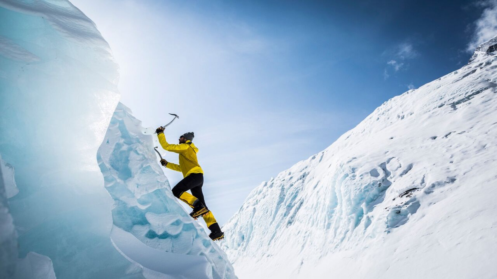
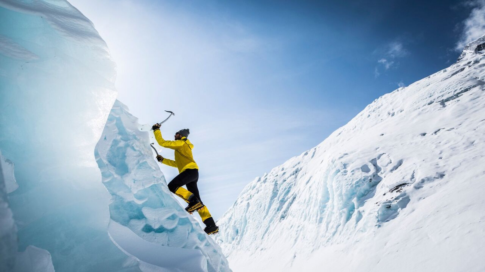

ADVENTURE
Adventure Time!
Mountain Man is jagged and has patches of grass and trees on his knees, feet, and arms, which he has despite being a mountain. His limbs haven't been used as of yet.Mountain Man is very temperamental. He's been upset due to the Marauders. He obviously cares for other creatures' well being.
Another mountain stands behind him who loves staring at his gorgeous back, which has short grass, a stream and two hills which appear to be his butt. He speaks with the voice of an old man.
BIKING
Cycling is a healthy, low-impact exercise that can be enjoyed by people of all ages, from young children to older adults. It is also fun, cheap and good for the environment.
Riding to work or the shops is one of the most time-efficient ways to combine regular exercise with your everyday routine. An estimated one billion people ride bicycles every day – for transport, recreation and sport.
PARA GLIDING
Paragliding is the recreational and competitive adventure sport of flying paragliders: lightweight, free-flying, foot-launched glider aircraft with no rigid primary structure. The pilot sits in a harness or lies supine in a cocoon-like 'pod' suspended below a fabric wing.
The most famous spot in Billing is its paragliding take-off point, which is the world's second highest, towering at 8,000ft, offering panoramic views of the valley below.
SURFING
Surfing is a water sport where an athlete performs manoeuvres on a wave while standing on a board.When surfers see a wave they can ride, they paddle quickly to catch the rising wave. Just as the wave breaks, the surfers jump from their bellies to their feet, crouching on their boards. Being able to stand up is the mark of an experienced surfer. Surfers ride the wave as it breaks toward the shore.
Men and women from all over the world practice surfing, and the surfing community shares a concern for the ocean environment.